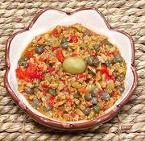

|
AlcaparradoPuerto Rico - Alcaparrado | ||||
| Makes: Effort: Sched: DoAhead: |
1-2/3 cups ** 20 min Best |
An essential basic ingredient used in Puerto Rican cooking, in bean stews, pickled fish, braised meat dishes, etc. It is most often imported from Spain in bottles, but like most such things, it's better made at home. | |||
|
|
6 4 3 1/4 2 1/2 |
oz oz oz t T c |
Olives, green (1) Bell Pepper, red (2) Capers, small Black Pepper Olive Oil, ExtV Wine Vinegar, red |
Many make Alcaparrado chopped very coarse, or not at all - depends on how you intend to use it. Make: (20 min)
|